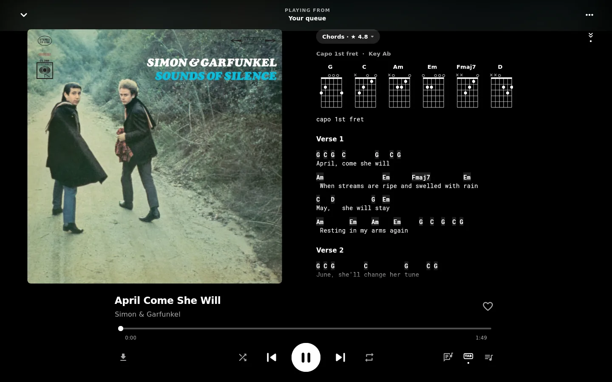
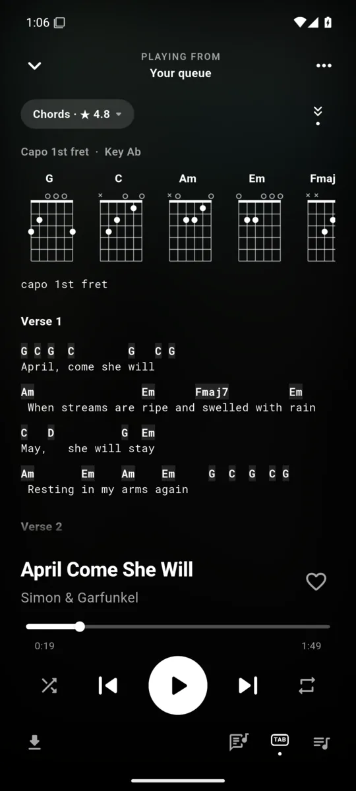

music
An ad-free music player for your phone and computer. Search anything, make playlists, download songs, play along with guitar tabs and chords, and keep listening with the screen off.


What you get
- Everything on YouTube Music: albums, artists, playlists, lyrics, with album art for every song.
- Plays in the background with lock-screen, notification and headphone controls.
- Guitar tabs and chord sheets with chord diagrams for nearly every song, scrolling along as it plays.
- Download songs, albums and playlists to listen offline.
- Your own playlists and Liked Songs, kept on your device.
- Shuffle, repeat, queue, and endless similar songs when your music ends.
- Keeps itself up to date: new versions download in the background and install with one tap.
Installing
Android
- Download
music-android.apkon your phone and open it. - If asked, allow your browser to install apps (“Install unknown apps”).
- Tap Install. Later versions install over the top and keep your library.
Windows
- Open
music-windows-setup.exe. It installs in a few seconds and opens music. - If Windows SmartScreen appears, click More info → Run anyway.
music is then in your Start menu. Remove it any time from Settings → Apps.
macOS
- Open
music-macos.dmgand drag music onto Applications. - Open music from Applications. The first time, macOS says it can’t check the app (it isn’t from the App Store): click Done, go to System Settings → Privacy & Security, scroll down and click Open Anyway.
Linux
Ubuntu, Debian, Mint, Pop!_OS (apt)
Paste this into a terminal. It adds the music repository and installs it, and sudo apt upgrade keeps it up to date from then on.
curl -fsSL https://v3ai.github.io/music/install.sh | sudo shYou can read the script first. To remove music: sudo apt remove music.
Any other distro (AppImage)
- Download
music-linux-x86_64.AppImage. - Allow it to run: right-click it → Properties → Allow executing as program (or
chmod +x music-linux-x86_64.AppImage). - Double-click it. music adds itself to your app menu, so next time just open it from there.
iPhone
Not available. Apple only allows App Store apps, and app stores don’t allow apps like this one.